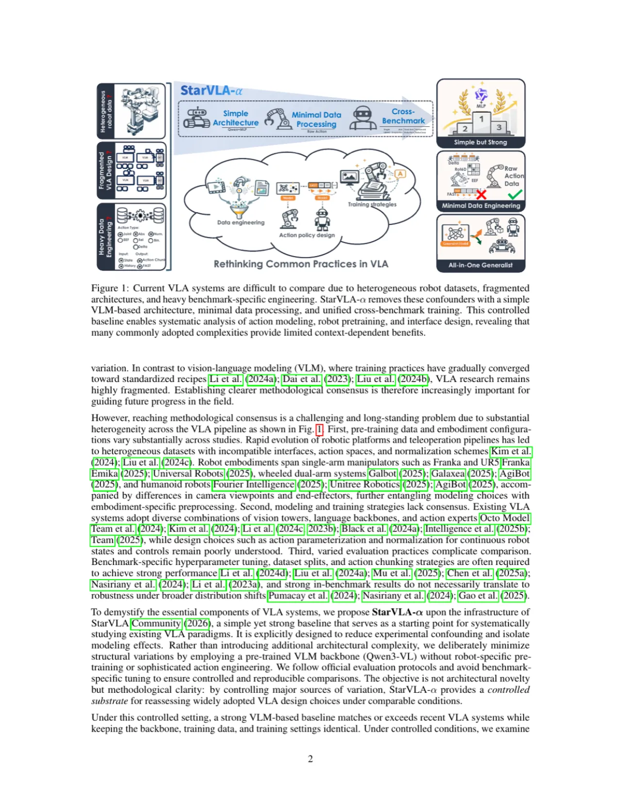
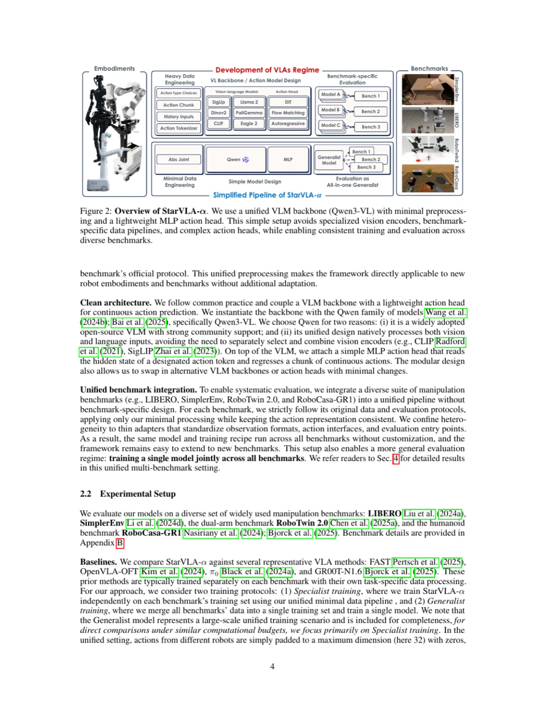
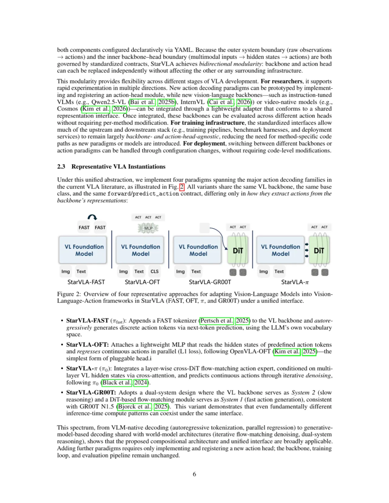
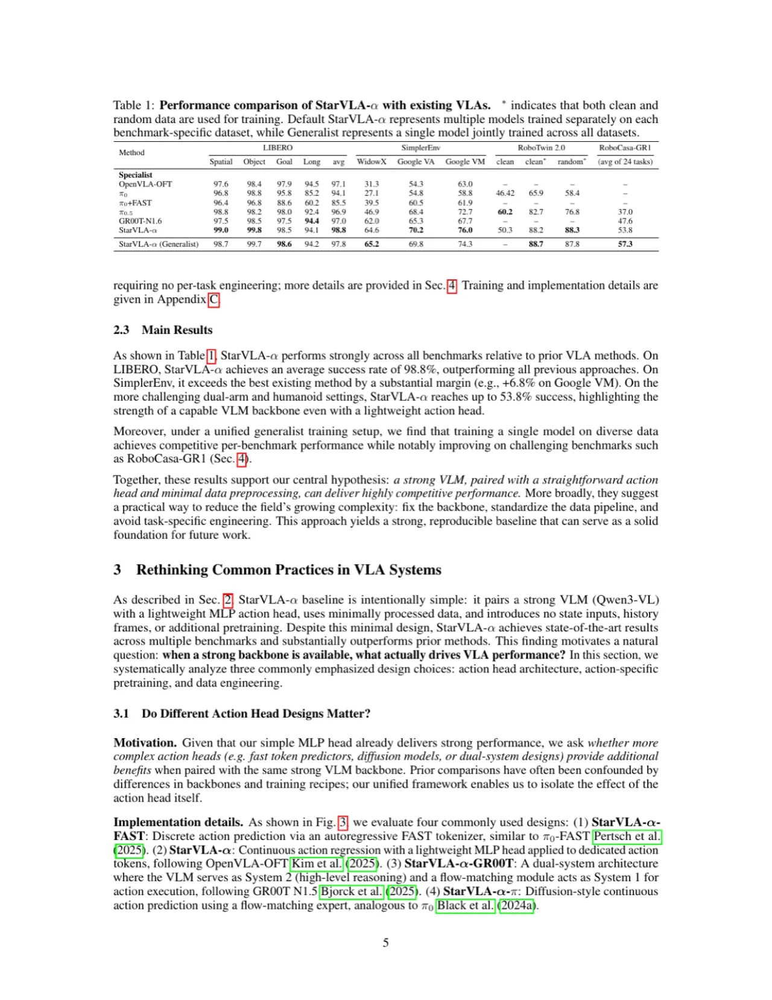
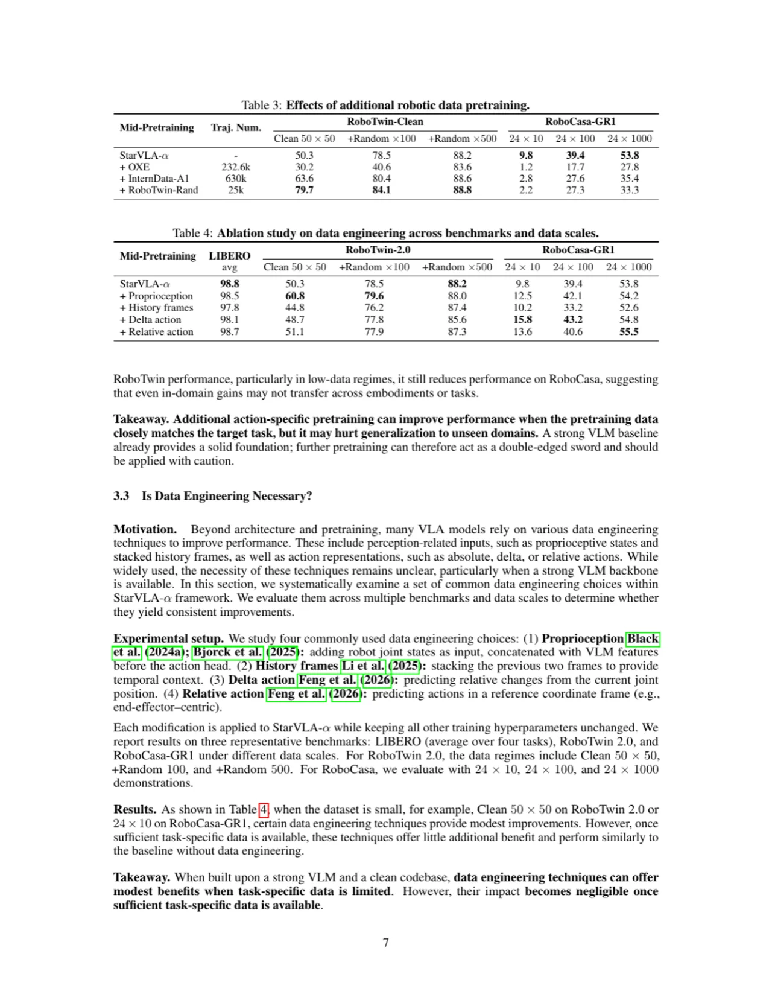

VLA（Vision-Language-Action）研究领域正快速扩张，但方法之间在架构、训练数据、体现配置和 benchmark 特定工程方面差异极大，难以公平比较。StarVLA-α 提出一个刻意最小化复杂度的简洁基线，在 LIBERO、SimplerEnv、RoboTwin、RoboCasa 四个基准上统一训练，以受控方式系统研究 VLA 设计选择，证明"强大 VLM 主干 + 最少设计"已足够强大。
VLA 领域正高速发展，但存在严重的方法碎片化问题：不同方法在架构、训练数据、体现配置（embodiment configuration）和 benchmark 特定工程（benchmark-specific engineering）方面差异极大，导致难以判断哪些设计决策真正驱动了性能提升。
"The VLA landscape remains highly fragmented and complex: as existing approaches vary substantially in architectures, training data, embodiment configurations, and benchmark-specific engineering."

当前 VLA 研究的三大核心难题：
StarVLA-α 的核心假设是：通过刻意减少实验变量（confounders），可以系统地评估哪些设计选择真正有效，哪些只是特定场景下的过度工程。
StarVLA-α 建立在最小充分性（minimal-sufficiency）假设之上：强大的 VLM 配合轻量 action head，不需要任何 benchmark 专属预处理，即可学到可迁移的策略。框架在 StarVLA Community 基础设施上构建，核心组成包括：Unified I/O Interface、Compositional Framework 和 VL Foundation Models。

所有框架模块从同一 VL backbone 继承，通过两种方法支持统一接口：
forward(raw_images, atr, ...) 作为训练入口，接收多视角 RGB 图像、自然语言指令，并以字典形式返回 action chunk；predict_action(raw_images, atr, ...) 作为推理入口，接受归一化动作（对连续动作减均值、除单位方差）并返回预测动作。
这一设计使任何 VL Foundation Model 只要能处理 raw observations，无需额外适配即可直接接入 StarVLA-α。
StarVLA-α 将策略分解为两个显式组件：VL backbone（视觉-语言表征）与 action head（动作解码）。四种代表性配置：

为提升跨体现泛化，StarVLA-α 采用极简数据 pipeline：输入为 RGB 图像（无任何 benchmark 专属预处理），语言指令作为提示。动作归一化遵循 zero-mean、unit-variance。模型使用训练-测试对齐的 split only（不使用 history stacking 或 image augmentation），确保实验可复现性。
在 LIBERO、SimplerEnv、RoboTwin 2.0、RoboCasa-GR1 四大主流 benchmark 上进行统一多 benchmark 训练，使用各自官方评估协议。以 LIBERO 为例，每个任务集 10 个任务，每任务 500 次训练演示，50 次 episodes per task 评估。

| 方法 | Spatial | Object | Goal | Long | 平均 |
|---|---|---|---|---|---|
| OpenVLA-OFT (Patrick et al., 2025) | 77.6 | 91.3 | 76.1 | 71.6 | 79.2 |
| GR00T N1.5 | 63.5 | 85.9 | — | — | — |
| StarVLA-α (ours) | 89.4 | 94.4 | 91.8 | 87.6 | 90.8 |
| 方法 | WidowX CleanUp | WidowX Spoon | Google VM | 平均 |
|---|---|---|---|---|
| OpenVLA (Kim et al., 2024) | — | — | — | ~50.0 |
| OpenVLA-OFT (VL+Cosmos-Predict2-2B) | — | — | — | — |
| StarVLA-α | 90.6 | 96.1 | 61.3 | — |
在公开 real-world RoboChallenge benchmark 上，单一泛化模型（StarVLA-α）以 20% 优势超越 π₀.₅。这是本文最突出的结果，表明极简设计在真实机器人部署中同样有效。

StarVLA-α 主要在仿真 benchmark（LIBERO、SimplerEnv、RoboTwin、RoboCasa）上评估，真实机器人实验仅限于 RoboChallenge 公开榜单。仿真到真实的迁移（sim-to-real gap）问题并未系统研究。
作者证明统一训练可以跨体现泛化，但实验设置仍局限于论文所选的四个 benchmark 内分布。对于全新物体、新场景或开放世界任务，当前框架的泛化能力尚未验证。
论文揭示数据工程技巧（history stacking、proprioception、relative actions）的效果具有高度任务和数据尺度依赖性。这意味着在新任务或新体现上，用户仍需进行 benchmark 特定的消融实验，无法直接套用"最优"配置。
尽管比较了 FAST、OFT、GR00T 和 StarVLA-α 四种解码头，但仍未覆盖所有主流策略（如 diffusion policy、ACT 等），结论的普适性受限于所选设计空间。